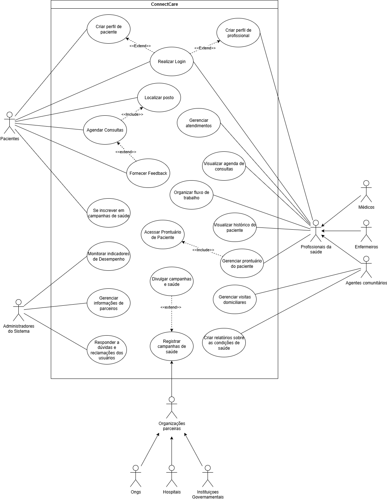

Diagrama de casos de uso - ConnectCare

Diagrama de casos de uso - Miro
Segue o mesmo diagrama UML, mas na plataforma Miro, para melhor visualização:
Atores
- Pacientes
- Administradores do Sistema
- Profissionais da Saúde
- Médicos
- Enfermeiros
- Agentes comunitários
- Organizações parceiras
- ONGs
- Hospitais
- Instituições Governamentais
Casos de uso identificados
Segue os casos de uso identificados para cada ator do sistema:
Casos de uso - Pacientes
- Criar perfil de paciente
- Realizar Login
- Localizar posto
- Agendar consultas
- Fornecer feedback
- Se inscrever em campanhas de saúde
Casos de uso - Administradores do Sistema
- Monitorar indicadores de desempenho
- Gerenciar informações de parceiros
- Responder a dúvidas e reclamações dos usuários
Casos de uso - Organizações parceiras
- Registrar campanhas de saúde
Casos de uso - Profissionais da saúde
- Criar perfil de profissional
- Realizar Login
- Gerenciar atendimentos
- Visualizar agenda de consultas
- Organizar fluxo de trabalho
- Visualizar histórico do paciente
- Gerenciar prontuário do paciente
Casos de uso - Agentes comunitários
- Gerenciar visitas domiciliares
- Criar relatórios sobre as condições de saúde
Específicações de casos de uso
Específicações de alguns casos de uso identificados
Caso de Uso: Agendar Consultas
1. Breve Descrição
O caso de uso "Agendar Consultas" permite que um Paciente, autenticado no sistema ConnectCare, escolha um profissional de saúde, selecione data, horário e local de atendimento, e confirme o agendamento de forma simples e segura.
2. Atores
- Paciente
3. Condições Prévias
- O paciente deve estar logado no sistema
- Devem haver profissionais de saúde disponíveis
4. Fluxo Básico (FB)
- O paciente escolhe a opção "Agendar Consulta"
- O paciente insere as informações dos sintomas [FE01]: 2.1. O paciente insere a descrição dos sintomas [RN02] 2.2. O paciente insere a duração dos sintomas [RN02] 2.3. O paciente insere a intensidade dos sintomas [RN02]
- O sistema lista os tipos de consulta disponíveis
- O paciente seleciona um tipo de consulta
- O sistema seleciona o posto e profissional de saúde, do tipo de consulta selecionado, para a consulta baseado na geolocalização do paciente, a fim de selecionar o posto mais próximo ao paciente [FA01] [FA02] [RN01]
- O paciente escolhe uma Data/Horário para a consulta, baseado na disponibilidade do profissional de saúde
- O paciente confirma o agendamento
- O sistema registra o agendamento e exibe confirmação
- O caso de uso é encerrado
5. Fluxos Alternativos (FA)
FA01 – Trocar posto
- No FB5, o paciente clica em "Escolher outro posto" 1.1. O sistema exibe uma lista de postos ordenados pela disponibilidade de profissionais de saúde para o tipo de consulta e pela distância 1.2. O paciente seleciona manualmente outro posto 1.3. O sistema seleciona o profissional de saúde adequado de acordo com a disponibilidade 1.4. O sistema retorna ao FB6
FA02 – Trocar profissional de saúde
- No FB5, o paciente clica em "Escolher outro profissional de saúde" 1.1. O sistema exibe uma lista de profissionais de saúde, do tipo de consulta, disponíveis naquele posto de saúde 1.2. O paciente seleciona manualmente outro profissional de saúde 1.3. O sistema retorna ao FB6
6. Fluxos de Exceção (FE)
FE01 – Dados inválidos
No FB2, se o usuário inserir alguma informação incorreta de acordo com a RN02, o sistema: 1. Exibe uma mensagem "Informações inválidas" 2. Retorna ao FB2
7. Regras de Negócio (RN)
-
RN01 – Localização
O sistema considera um raio de 10km e seleciona o posto de saúde, com profissionais disponíveis, mais próximo ao paciente -
RN02 – Validação de informações
Os dados devem seguir o seguinte formato:
| Campo | Formato | Obrigatoriedade | Valores Válidos |
|---|---|---|---|
| Descrição dos sintomas | Texto até 500 caracteres | Sim | - |
| Duração | Inteiro | Sim | 1 < dias <1000 |
| Intensidade | Inteiro | Sim | 0 < valor < 11 |
8. Pós-Condições
O agendamento da consulta é registrado no sistema e o paciente recebe confirmação com os detalhes da consulta agendada.
9. Ponto de Extensão
- Local: No FB5
- Descrição: Deve ser incluído o caso de uso "Localizar posto", com o objetivo de localizar o posto de saúde mais próximo do paciente para realizar o agendamento da consulta
Caso de Uso: Criar perfil de paciente
1. Breve Descrição
Este caso de uso descreve o processo pelo qual um paciente cria seu perfil na plataforma ConnectCare. O objetivo é registrar informações pessoais básicas para permitir o acesso personalizado a serviços de saúde, como agendamento de consultas, recebimento de notificações e visualização de campanhas de saúde.
2. Atores
- Paciente
3. Condições Prévias
- O paciente deve ter acesso à internet e a um dispositivo com navegador ou aplicativo ConnectCare instalado
- O sistema deve estar disponível e em pleno funcionamento, garantindo que a funcionalidade de criação de perfil esteja acessível
- O paciente também deve concordar com os termos de uso e com a política de privacidade da plataforma, conforme a legislação vigente de proteção de dados
4. Fluxo Básico (FB)
- O paciente acessa a plataforma ConnectCare pela primeira vez
- O sistema exibe a opção de "Criar Perfil"
- O paciente seleciona a opção e preenche os seguintes dados: nome completo, data de nascimento, CPF (opcional), endereço, telefone, e condições de saúde preexistentes [FA01] [FA02] [FA03] [FE01] [FE02] [RN01]
- O paciente confirma as informações e submete o formulário
- O sistema valida os dados e salva o perfil [FE01] [FE02] [RN01]
- O sistema exibe uma mensagem de sucesso e redireciona o paciente à tela principal
- O caso de uso é encerrado
5. Fluxos Alternativos (FA)
FA01 – Dados Inválidos
- No FB3, o paciente insere informações com formatação incorreta (ex: telefone inválido)
- O sistema exibe uma mensagem de erro específica e solicita a correção
- O fluxo retorna ao FB3
FA02 – Dados Incompletos
- No FB3, o paciente deixa campos obrigatórios em branco
- O sistema exibe uma mensagem sobre quais campos precisam ser preenchidos
- O fluxo retorna ao FB3
FA03 – Recusa em Informar Condição de Saúde
- O paciente opta por não informar condições de saúde preexistentes
- O sistema permite continuar, mas exibe uma mensagem de que algumas funcionalidades podem ser limitadas
- O fluxo segue normalmente para o FB5
6. Fluxos de Exceção (FE)
FE01 – Falha de Conexão
- Durante o envio do formulário, ocorre perda de conexão
- O sistema informa a falha e salva os dados localmente
- Ao restabelecer a conexão, o paciente pode retomar de onde parou
FE02 – Erro Interno do Sistema
- Ocorre uma falha no servidor durante o salvamento do perfil
- O sistema exibe uma mensagem de erro e orienta o paciente a tentar novamente mais tarde
7. Regras de Negócio (RN)
- RN01 – Validação de Dados
Os dados devem seguir o seguinte formato:
| Campo | Formato | Obrigatoriedade | Valores Válidos |
|---|---|---|---|
| Nome Completo | Texto até 100 caracteres | Sim | Apenas letras e espaços |
| Data de Nascimento | DD/MM/AAAA | Sim | Data válida, idade >= 0 |
| CPF | 11 dígitos | Não | CPF válido quando preenchido |
| Telefone | (XX) XXXXX-XXXX | Sim | Formato de telefone brasileiro |
| Endereço | Texto até 200 caracteres | Sim | - |
-
RN02 – Proteção de Dados
O armazenamento e tratamento dos dados informados devem obedecer às normas da LGPD, assegurando o consentimento do usuário e a confidencialidade das informações -
RN03 – Acessibilidade
O sistema deve seguir as diretrizes de acessibilidade digital (como WCAG), apresentando textos legíveis, navegação intuitiva e suporte a tecnologias assistivas
8. Pós-Condições
- O perfil do paciente é criado e armazenado na base de dados, permitindo personalização da experiência e acesso a funcionalidades da plataforma
- O sistema também poderá utilizar essas informações para sugerir serviços de saúde relevantes, enviar notificações sobre campanhas e garantir acesso seguro e contínuo ao histórico médico digital do paciente
9. Ponto de Extensão
- Local: Após o FB6
- Descrição: Caso o paciente informe dados correspondentes a um histórico anterior, o sistema pode vincular automaticamente ao prontuário existente através do caso de uso "Vinculação com Prontuário Digital"
Caso de Uso: Gerenciar Usuários
1. Breve Descrição
Este caso de uso permite ao Administrador do Sistema gerenciar as contas de todos os tipos de usuários da plataforma "ConnectCare" (Pacientes, Profissionais de Saúde, Organizações Parceiras). As funcionalidades incluem pesquisar, visualizar, atualizar informações, criar novas contas e desativar contas existentes, garantindo a segurança, a organização e a integridade dos dados do sistema.
2. Atores
- Administrador do Sistema
3. Condições Prévias
- O Administrador do Sistema deve estar autenticado na plataforma com privilégios administrativos
4. Fluxo Básico (FB)
- O Administrador do Sistema realiza o login no painel administrativo da plataforma
- O sistema exibe o painel principal com diversas opções de gerenciamento
- O Administrador seleciona a opção "Gerenciamento de Usuários"
- O sistema apresenta uma interface para pesquisar e listar os usuários
- O Administrador utiliza os filtros de busca (ex: por nome, e-mail, tipo de usuário) para encontrar o usuário desejado [FE01]
- O sistema exibe uma lista com os resultados correspondentes à busca [FE01]
- O Administrador seleciona o usuário que deseja gerenciar na lista
- O sistema exibe os detalhes completos da conta do usuário selecionado
- O Administrador clica na opção "Desativar Conta" [FA01] [FA02] [FA03]
- O sistema exibe uma mensagem de confirmação para a desativação [FA01]
- O Administrador confirma a ação
- O sistema atualiza o status do usuário para "inativo", bloqueando seu acesso à plataforma, e registra a operação em um log de auditoria
- O sistema exibe a mensagem: "Usuário desativado com sucesso."
- O caso de uso é encerrado
5. Fluxos Alternativos (FA)
FA01 – Cancelar Operação
- Em qualquer etapa que exija confirmação (como desativar ou apagar), se o Administrador escolher "Cancelar", o sistema interrompe a operação e retorna à tela anterior sem salvar alterações
FA02 – Criar Novo Usuário
- No FB4, o Administrador seleciona a opção "Criar Novo Usuário"
- O sistema exibe um formulário para a criação de conta
- O Administrador seleciona o tipo de perfil (Paciente, Profissional, Organização) e preenche os dados necessários [FE02] [RN01] [RN02]
- O Administrador salva o novo usuário
- O sistema valida os dados, cria a nova conta com status "ativo" e exibe uma mensagem de sucesso. O fluxo se encerra
FA03 – Atualizar Dados de Usuário
- No FB8, o Administrador escolhe a opção "Editar Perfil"
- O sistema abre o formulário com os dados do usuário em modo de edição
- O Administrador modifica as informações desejadas (ex: alterar permissões, atualizar contato de uma organização, corrigir nome) [FE02] [RN01] [RN02]
- O Administrador salva as alterações
- O sistema valida os novos dados [FE02], atualiza o perfil do usuário e exibe uma mensagem de sucesso. O fluxo retorna ao FB8
6. Fluxos de Exceção (FE)
FE01 – Usuário Não Encontrado
- No FB6, se a busca não retornar nenhum resultado, o sistema exibirá a mensagem: "Nenhum usuário encontrado com os critérios informados." O fluxo retorna ao FB5
FE02 – Dados Inválidos ou Incompletos
- Durante a criação [FA02] ou atualização [FA03] de um usuário, caso algum campo obrigatório não seja preenchido ou um dado seja inserido em formato incorreto (ex: e-mail sem "@"), o sistema exibirá uma mensagem de erro indicando o campo problemático. O fluxo retorna à tela de preenchimento do formulário
7. Regras de Negócio (RN)
-
RN01 – Restrições de Administrador
Um administrador não pode desativar a sua própria conta de usuário -
RN02 – Validação de Dados Profissionais
Ao criar uma conta para um Profissional de Saúde, o sistema pode exigir um campo de identificação profissional (ex: CRM para médicos) para validação futura -
RN03 – Preservação de Histórico
Contas de usuários desativadas não podem realizar login, mas seus dados devem ser mantidos no sistema para fins de histórico -
RN04 – Mascaramento de Dados Sensíveis
O sistema deve garantir que dados sensíveis dos usuários (ex: CPF, dados de saúde) sejam exibidos de forma mascarada para o Administrador, exceto quando estritamente necessário -
RN05 – Auditoria e Rastreabilidade
Todas as ações realizadas neste caso de uso devem ser registradas com o ID do administrador, data, hora e detalhes da ação
8. Pós-Condições
- A conta de usuário é criada, atualizada ou desativada com sucesso no banco de dados
- As permissões de acesso do usuário são aplicadas ou revogadas conforme a ação realizada
- Toda ação de gerenciamento é registrada em um log de auditoria para fins de segurança e rastreabilidade
9. Pontos de Extensão
- Implementar funcionalidade de gerenciamento em massa (ex: desativar múltiplos usuários de uma vez)
- Criar perfis de administradores com diferentes níveis de permissão (ex: um administrador que só pode gerenciar pacientes)
- Integrar com um sistema de redefinição de senha automática para os usuários
10. Requisitos Especiais
- O sistema deve garantir que dados sensíveis dos usuários (ex: CPF, dados de saúde) sejam exibidos de forma mascarada para o Administrador, exceto quando estritamente necessário
- Todas as ações realizadas neste caso de uso devem ser registradas com o ID do administrador, data, hora e detalhes da ação
Caso de Uso: Responder Dúvidas e Reclamações
1. Breve Descrição
Este caso de uso descreve como o Administrador do Sistema pode gerenciar dúvidas e reclamações enviadas por usuários externos (Pacientes, Profissionais de Saúde e Agentes Comunitários) na plataforma ConnectCare. As ações possíveis incluem visualizar solicitações, responder, encaminhar para outro setor ou marcar como resolvidas.
2. Atores
- Usuário Externo (Paciente, Profissional de Saúde ou Agente Comunitário)
- Administrador do Sistema
3. Condições Prévias
- O usuário externo deve estar autenticado no sistema.
- O sistema deve estar ativo e apto a receber novas solicitações.
4. Fluxo Básico (FB)
- O caso de uso inicia quando um usuário externo registra uma dúvida ou reclamação.
- O usuário acessa a plataforma e envia a solicitação. [FE01][RN02]
- O sistema armazena a solicitação e a disponibiliza ao Administrador.
- O Administrador acessa a área administrativa e visualiza as solicitações pendentes. [FE03][RN03]
- O Administrador escolhe uma das ações:
- Responder à solicitação [FA01];
- Encaminhar para outro setor [FA02];
- Marcar como resolvida [FA03].
- O sistema registra a ação realizada e notifica o usuário externo.
- O caso de uso é encerrado.
5. Fluxos Alternativos (FA)
FA01 – Responder à Solicitação
- O Administrador seleciona uma solicitação.
- O sistema exibe seus detalhes (tipo, data, usuário e descrição).
- O Administrador insere e confirma a resposta. [FE01][FE02][RN02]
- O sistema salva a resposta e envia notificação ao usuário.
FA02 – Encaminhar para Outro Setor
- O Administrador opta por encaminhar a solicitação.
- O sistema apresenta a lista de setores disponíveis.
- O Administrador escolhe o setor e, se desejar, insere um comentário.
- Ao confirmar, o sistema redireciona a solicitação e notifica o setor responsável. [FE03][RN03]
FA03 – Marcar como Resolvida
- O Administrador escolhe marcar a solicitação como resolvida.
- O sistema apresenta a lista de solicitações pendentes.
- O Administrador revisa o histórico e, opcionalmente, insere uma justificativa.
- O sistema registra a ação e notifica o usuário externo.
6. Fluxos de Exceção (FE)
FE01 – Resposta Inválida
Se a resposta estiver vazia ou contiver caracteres inválidos, o sistema bloqueia o envio e exibe mensagem de erro.
FE02 – Falha no Envio da Resposta
Em caso de erro no banco de dados ou na conexão, o sistema informa a falha ao usuário.
FE03 – Falha no Encaminhamento
Se o setor estiver indisponível, o sistema exibe uma mensagem de erro e retorna à etapa anterior.
7. Regras de Negócio (RN)
-
RN01 – Tempo Máximo de Resposta
Dúvidas devem ser respondidas em até 48h. Reclamações críticas, em até 24h. -
RN02 – Validação da Resposta
A resposta deve ser válida, sem campos vazios ou caracteres inválidos. [FE01] -
RN03 – Registro de Histórico
Todas as interações devem ser salvas para fins de auditoria e consulta futura. -
RN04 – Acessibilidade
O sistema deve ser compatível com VLibras e leitores de tela.
8. Pós-Condições
O usuário externo tem sua solicitação respondida, encaminhada ou marcada como resolvida, com devida notificação.
9. Ponto de Extensão
Não se aplica.
Caso de Uso: Registrar Campanhas de Saúde
1. Breve Descrição
Este caso de uso permite que o Administrador do Sistema registre campanhas de saúde na plataforma ConnectCare. A funcionalidade inclui o cadastro de informações como título, descrição, público-alvo, datas e local de realização. O objetivo é divulgar e organizar ações de promoção à saúde para a população atendida.
2. Atores
- Administrador do Sistema
3. Condições Prévias
- O Administrador deve estar autenticado no sistema.
- O sistema deve estar funcionando corretamente e com acesso ao módulo de campanhas.
4. Fluxo Básico (FB)
- O Administrador acessa o módulo de campanhas de saúde.
- O sistema exibe a opção para criar nova campanha.
- O Administrador preenche os dados da campanha:
- Título
- Descrição
- Público-alvo
- Data de início e fim
- Local da campanha
- O Administrador confirma o cadastro.
- O sistema valida os dados inseridos. [FE01][RN02]
- Em caso de sucesso, a campanha é registrada e fica disponível para visualização.
- O caso de uso é encerrado.
5. Fluxos Alternativos (FA)
FA01 – Editar Campanha Existente
- O Administrador seleciona uma campanha cadastrada.
- O sistema exibe os dados atuais.
- O Administrador edita os campos desejados e confirma.
- O sistema valida e salva as alterações. [FE01][RN02]
FA02 – Excluir Campanha
- O Administrador acessa a lista de campanhas.
- Seleciona uma campanha para exclusão.
- O sistema solicita confirmação.
- Após confirmação, a campanha é removida do sistema.
- O sistema registra a ação para fins de histórico. [RN03]
6. Fluxos de Exceção (FE)
FE01 – Dados Inválidos
Se algum campo obrigatório estiver em branco ou com dados inválidos, o sistema exibe uma mensagem de erro e impede o prosseguimento.
FE02 – Falha no Cadastro
Se ocorrer falha na conexão ou no banco de dados, o sistema exibe uma mensagem de erro e solicita nova tentativa.
7. Regras de Negócio (RN)
-
RN01 – Datas Válidas
A data de término da campanha não pode ser anterior à data de início. -
RN02 – Campos Obrigatórios
Título, público-alvo, datas e local são campos obrigatórios. [FE01] -
RN03 – Registro de Histórico
Toda campanha criada, editada ou excluída deve ser registrada para fins de auditoria. -
RN04 – Acessibilidade
O sistema deve ser acessível, compatível com leitores de tela e ferramentas como VLibras.
8. Pós-Condições
A campanha de saúde é registrada, editada ou excluída, com os dados corretamente armazenados no sistema.
9. Ponto de Extensão
Não se aplica.
Caso de Uso: Visualizar Histórico do Paciente
1. Breve Descrição
Este caso de uso permite que um paciente visualize seu histórico médico por meio da plataforma ConnectCare. O histórico inclui consultas, exames, tratamentos e demais informações relevantes. O objetivo é oferecer ao paciente acesso rápido, seguro e centralizado aos seus registros de saúde.
2. Atores
- Paciente
- Profissional de Saúde (apenas com autorização expressa do paciente)
3. Condições Prévias
- O paciente deve estar autenticado na plataforma.
- O histórico médico deve estar cadastrado no sistema.
- Profissionais de saúde só poderão acessar o histórico mediante autorização do paciente.
4. Fluxo Básico (FB)
- O paciente acessa o menu principal e seleciona a opção "Histórico Médico".
- O sistema verifica se o paciente está autenticado. [FE01]
- Se não estiver, redireciona para a tela de login.
- O sistema solicita os critérios de busca (ex: período, tipo de registro).
- O paciente preenche os critérios. [FE03]
- Caso contrário, o sistema exibe mensagem de erro e solicita preenchimento.
- O sistema valida os critérios e aplica as regras de acesso. [RN01]
- O sistema exibe a lista de registros que correspondem à busca.
- Se nenhum registro for encontrado, segue para o fluxo alternativo [FA01].
- O paciente seleciona um registro para ver detalhes.
- O sistema apresenta as informações completas (data, diagnóstico, prescrições, anotações). [RN02]
- O paciente pode optar por baixar ou imprimir o registro. [RN03]
- O caso de uso é encerrado.
5. Fluxos Alternativos (FA)
FA01 – Sem Registros Encontrados
Se não houver registros com os critérios informados, o sistema exibe mensagem e permite que novos critérios sejam inseridos.
FA02 – Acesso Negado ao Profissional de Saúde
Se um profissional tentar acessar o histórico sem autorização, o sistema bloqueia o acesso, exibe uma mensagem de erro e retorna ao menu.
6. Fluxos de Exceção (FE)
FE01 – Falha na Autenticação
Se o paciente ou profissional não estiver autenticado, será redirecionado para a tela de login.
Regra relacionada: RN01
FE02 – Erro no Carregamento dos Registros
Em caso de falha na consulta ao banco de dados ou sistema, uma mensagem de erro será exibida, e o usuário poderá tentar novamente.
Regra relacionada: RN03
FE03 – Informações Obrigatórias Não Preenchidas
Se os critérios de busca não forem preenchidos, o sistema impedirá o avanço até que os dados sejam inseridos.
Regra relacionada: RN01
FE04 – Violação de Segurança ou Acesso Não Autorizado
Se um usuário tentar acessar dados sem permissão, o sistema bloqueará a ação e informará sobre a violação.
Regra relacionada: RN02
7. Regras de Negócio (RN)
-
RN01 – Controle de Acesso
Apenas pacientes autenticados podem acessar seu histórico.
Profissionais de saúde só podem visualizar com autorização do paciente. -
RN02 – Segurança e Privacidade
Todos os dados devem ser protegidos conforme a LGPD, garantindo acesso apenas a usuários autorizados. -
RN03 – Disponibilidade dos Registros
Os registros devem estar acessíveis e armazenados de forma segura e confiável.
8. Pós-Condições
- O paciente consegue visualizar seu histórico médico.
- Profissionais de saúde acessam os dados apenas mediante autorização do paciente.
9. Ponto de Extensão
- Local: Durante a visualização do histórico médico.
- Descrição: O caso de uso "Visualizar Histórico do Paciente" pode ser estendido por "Realizar Atendimento Médico", permitindo que o profissional utilize os dados para basear a consulta e registrar novas informações no prontuário do paciente.
| Data | Versão | Descrição | Autor |
|---|---|---|---|
| 02/07/25 | 1.0 | Criação do Documento | Bruno Garcia, Guilherme Zanella e Marcos Bezerra |
| 13/07/25 | 1.1 | Colocando em UML | Marcos Bezerra |
| 14/07/25 | 1.2 | Adicionando os Casos de Uso | Fábio Araújo |
| 14/07/25 | 1.3 | Adicionado especificações de casos de uso | Matheus Rodrigues |